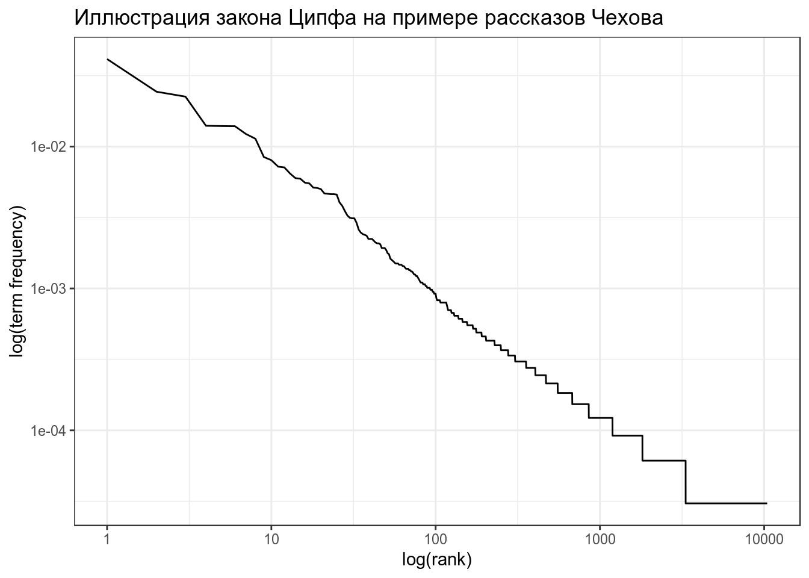
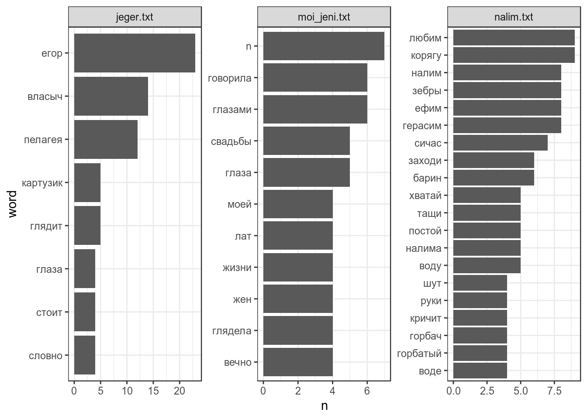
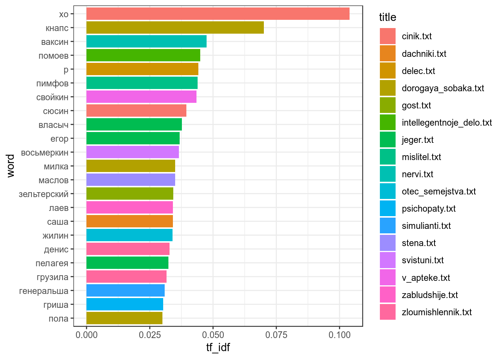
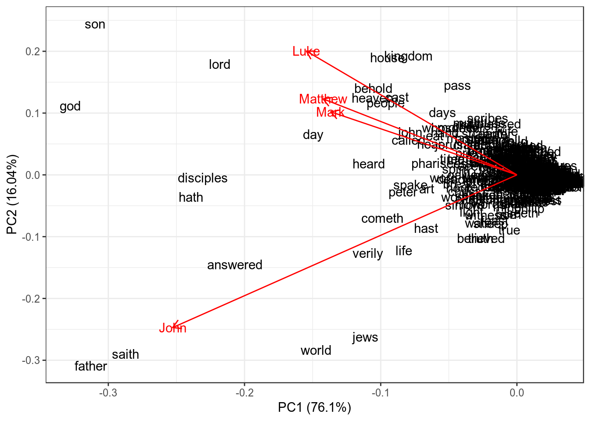
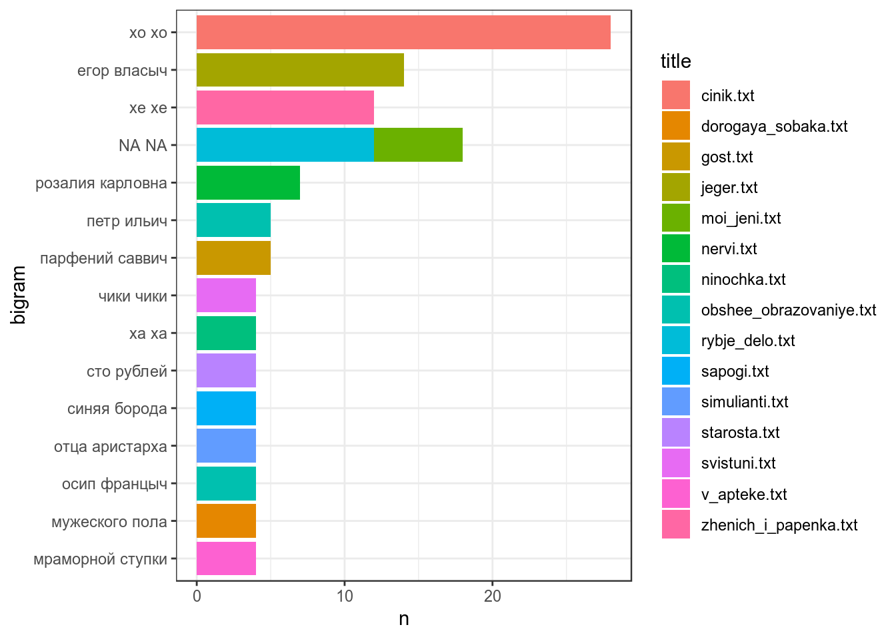
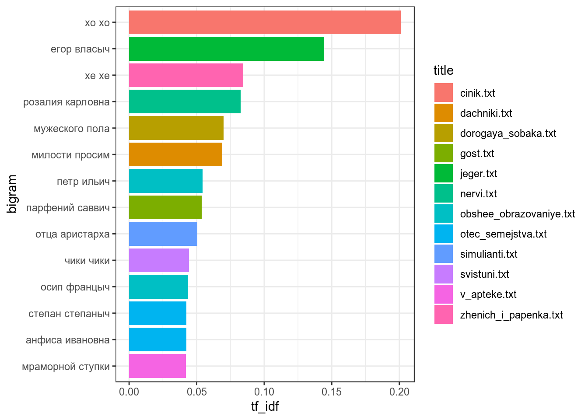
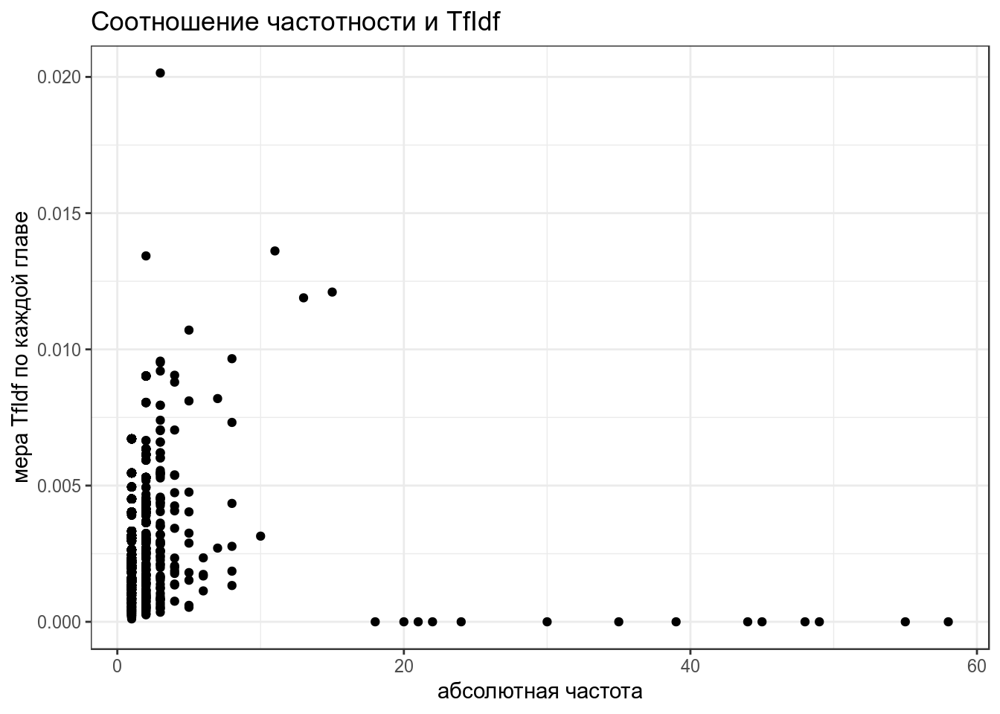

7. Частотность слов в тексте
Г. Мороз
“Интересно, кто же это такой Слонопотам?”– подумал Пух.
– Их не часто встретишь,– небрежно сказал Кристофер Робин.(А. А. Милн)
1. Подготовка1
Начнем с того, что скачаем датасет, с которым мы будем работать.
temp <- tempfile() # создаем временный файл
path <- "./docs/materials/Chekhov/"
download.file("https://goo.gl/9DWBF5", destfile = temp) # скачиваем в него архив
unzip(temp, exdir = path) # создаем папку Chekhov и распаковываем туда
rm(temp) # удаляем временный файл
list.files(path = path) # смотрим на список распокованных файлов## [1] "cinik.txt"
## [2] "dachniki.txt"
## [3] "delec.txt"
## [4] "dorogaya_sobaka.txt"
## [5] "gost.txt"
## [6] "intellegentnoje_delo.txt"
## [7] "jeger.txt"
## [8] "mertvoje_telo.txt"
## [9] "mislitel.txt"
## [10] "moi_jeni.txt"
## [11] "nalim.txt"
## [12] "ne_sudba.txt"
## [13] "nervi.txt"
## [14] "ninochka.txt"
## [15] "obshee_obrazovaniye.txt"
## [16] "otec_semejstva.txt"
## [17] "psichopaty.txt"
## [18] "rukovodstvo_dlya_zhelayushich_zhenica.txt"
## [19] "rybje_delo.txt"
## [20] "sapogi.txt"
## [21] "simulianti.txt"
## [22] "starosta.txt"
## [23] "stena.txt"
## [24] "straji_pod_strajey.txt"
## [25] "svistuni.txt"
## [26] "utoplennik.txt"
## [27] "v_apteke.txt"
## [28] "zabludshije.txt"
## [29] "zhenich_i_papenka.txt"
## [30] "zloumishlennik.txt"Это 30 маленьких рассказов А. П. Чехова. Давайте все их считаем:
files <- list.files(path = path) # создадим переменную со списком файлов
texts <- lapply(paste0(path, files), FUN=readLines) # считаем все файлы в одну переменную2. Введение в tidytext
Обычная философия tidy data: одна строчка – одно наблюдение; один столбец – одна переменная. Попробуем tidyфицировать один текст:
library(tidyverse); library(tidytext); library(stringr)
text_df <- data_frame(line = seq_along(texts[[1]]),
text = texts[[1]])
head(text_df)Чтобы избежать изменения размера шрифта нужно использовать аргумент to_lower = FALSE
На следующем шаге хотелось бы создать датафрейм со всем произведениями, которые мы рассматриваем.
texts <- lapply(seq_along(texts), function(x){
data_frame(title = files[[x]],
sentences = seq_along(texts[[x]]),
text = texts[[x]])
})
all_texts <- Reduce(function(x,y){merge(x,y, all = TRUE)}, texts)
all_texts %>%
unnest_tokens(word, text) ->
tidy_chekhov
head(tidy_chekhov)3. Закон Хердана-Хипса
Закон Хердана-Хипса (Herdan-Heaps’ law) – имперический закон, согласно которому количество уникальных слов в тексте зависит от длины текста.
\[V(n) = K\times n ^{β}\]
- V(n) – количество уникальных слов в тексте длины n
- обычно K между 10 и 100
- обычно β между 0.4 и 0.6
tidy_chekhov %>%
group_by(title) %>%
summarise(n_words = n(),
n_unique = length(unique(word))) ->
heaps
heaps %>%
ggplot(aes(n_words, n_unique))+
geom_point()+
theme_bw()+
labs(title = "Иллюстрация закона Хердана-Хипса на примере рассказов Чехова",
x = "количество слов",
y = "количество уникальных слов")
## Estimate Std. Error t value Pr(>|t|)
## sqrt(n_words) 19.12088 0.4248343 45.00785 2.186672e-28## [1] 0.98539944. Закон Ципфа
Закон Ципфа (Zipf’s law) – имперический закон, согласно которому частотность слова обратно пропорционально его рангу.
\[freq(r) = A \times N \times r^{-1}\]
- freq(r) – частотность слова с рангом r
- N – общее количество слов
- A – обычно 0.1
tidy_chekhov %>%
group_by(word) %>%
summarise(term_frequency = n()/nrow(tidy_chekhov)) %>%
arrange(desc(term_frequency)) %>%
mutate(rank = row_number()) -> zipf
head(zipf)zipf %>%
ggplot(aes(rank, term_frequency))+
geom_line()+
scale_x_log10() +
scale_y_log10() +
labs(title = "Иллюстрация закона Ципфа на примере рассказов Чехова",
y = "log(term frequency)",
x= "log(rank)")+
theme_bw()
5. Стоп слова
Чтобы начать анализировать текст нужно удалить “служебные” слова, которые часто встречаются в тексте, но не очень приближают к его пониманию. Такие списки для английского языка встроены в пакет tidytext (см. data(stop_words)). Для русского языка, конечно, ничего не встроено, но подобные списки легко гуглятся (я буду использовать этот).
ОБЯЗАТЕЛЬНО: проверьте используется ли буква ё в ваших данных и в вашем списке стоп слов.
## Warning in stri_detect_regex(string, pattern, opts_regex = opts(pattern)):
## argument is not an atomic vector; coercing## [1] FALSE FALSE TRUE## Warning in stri_detect_regex(string, pattern, opts_regex = opts(pattern)):
## argument is not an atomic vector; coercing## [1] FALSEtidy_chekhov$word <- str_replace_all(tidy_chekhov$word, "ё", "е")
tidy_chekhov %>%
filter(!word %in% ru_stop_words$V1) %>%
filter(str_detect(title, "moi_jeni.txt|nalim.txt|jeger.txt")) %>%
count(title, word, sort = TRUE) %>%
filter(n > 3) %>%
mutate(word = reorder(word, n)) %>%
ggplot(aes(word, n))+
coord_flip()+
geom_bar(stat= "identity")+
facet_wrap(~title, scale = "free")+
theme_bw()
6. TfIdf
Откидывание стоп-слов позволяет не анализировать малозначимые слова. Однако как показать, что какие-то два текста похожи, а другие различаются? Для этого используется мера TfIdf (term frequency inverse document frequency).
\[tf = \frac{количество\ употреблений\ единицы\ в\ тексте}{количество\ уникальных\ единиц\ в тексте}\] \[idf = log\left(\frac{количество\ документов\ в\ корпусе}{количество\ документов\ с\ исследуемой\ единицей}\right)\] \[TfIdf = tf*idf\]
tidy_chekhov %>%
count(title, word)%>%
arrange(desc(n)) %>%
bind_tf_idf(word, title, n) ->
tidy_chekhov_tf_idf
head(tidy_chekhov_tf_idf)tidy_chekhov_tf_idf %>%
filter(tf_idf > 0.03) %>% # число подобрано по данным
mutate(word = reorder(word, tf_idf)) %>%
ggplot(aes(word, tf_idf, fill = title))+
coord_flip()+
geom_bar(stat= "identity")+
theme_bw()
7. Частота как переменная
library(ggfortify)
gospels <- read.csv("https://raw.githubusercontent.com/agricolamz/2019_FE_R_statistics/master/data/gospel_freq_words.csv")
head(gospels)row.names(gospels) <- gospels$word
PCA <- prcomp(gospels[,2:5])
autoplot(PCA,
shape = FALSE,
loadings = TRUE,
label = TRUE,
loadings.label = TRUE)+
theme_bw()
## Importance of components:
## PC1 PC2 PC3 PC4
## Standard deviation 0.003482 0.001599 0.0008725 0.0007001
## Proportion of Variance 0.761020 0.160420 0.0477900 0.0307700
## Cumulative Proportion 0.761020 0.921440 0.9692300 1.00000008. n-граммы
Все это время мы работали с униграммами, однако достаточно много информации дает биграмное, триграммное и т. д. представление. Для того, чтобы получить n-граммы нужно использовать уже известную функцию unnest_tokens() с аргументом token = "ngrams"
all_texts %>%
unnest_tokens(bigram, text, token = "ngrams", n = 2) %>%
mutate(bigram = str_replace_all(bigram, "ё", "е")) ->
tidy_chekhov_bigrams
head(tidy_chekhov_bigrams)Биграмма – это строка… Надо распилить
tidy_chekhov_bigrams %>%
separate(bigram, c("word1", "word2"), sep = " ") ->
tidy_chekhov_bigrams
head(tidy_chekhov_bigrams)Выкинем стоп-слова:
tidy_chekhov_bigrams %>%
filter(!word1 %in% ru_stop_words$V1) %>%
filter(!word2 %in% ru_stop_words$V1) ->
tidy_chekhov_bigrams
head(tidy_chekhov_bigrams)tidy_chekhov_bigrams %>%
count(title, word1, word2, sort = TRUE) ->
tidy_chekhov_bigrams
head(tidy_chekhov_bigrams)Разъединили? Можно и объединитьǃ
tidy_chekhov_bigrams %>%
unite(bigram, word1, word2, sep = " ") ->
tidy_chekhov_bigrams
head(tidy_chekhov_bigrams)tidy_chekhov_bigrams %>%
filter(n > 3) %>% # число опять от фонаря
mutate(bigram = reorder(bigram, n)) %>%
ggplot(aes(bigram, n, fill = title))+
geom_bar(stat = "identity")+
coord_flip()+
theme_bw()
Можно опять же посчитать TfIdf:
tidy_chekhov_bigrams %>%
bind_tf_idf(bigram, title, n) %>%
arrange(desc(tf_idf)) ->
tidy_chekhov_bigrams_tf_idf
head(tidy_chekhov_bigrams_tf_idf)tidy_chekhov_bigrams_tf_idf %>%
filter(tf_idf > 0.04) %>% # число подобрано по данным
mutate(bigram = reorder(bigram, tf_idf)) %>%
ggplot(aes(bigram, tf_idf, fill = title))+
coord_flip()+
geom_bar(stat= "identity")+
theme_bw()
9. Задачи
9.1 Еще немножко о законе Ципфа
У функции unnest_tokens() есть аргумент token, значение которого по умолчанию "words". Попробуйте использовать значение "characters" и определить будет ли соблюдаться закон Ципфа для отдельных символов.
9.2 Фамильная честь Вустеров
Возможно, это прозвучит скучно, но давайте повторим все, что мы прошли, используя роман П. Г. Вудхауза “Фамильная честь Вустеров”.
- скачайте текст романа
- создайте переменную, отвечающую за номер главы (название давайте включим в первую главу).
- tidyфицируйте текст (занудства ради я бы попросил создать переменную с номером строки:
row_number()) - В какой главе живет самая частотная униграмма?
- Уберите стоп-слова. В какой главе теперь живет самая частотная униграмма?
- Посчитайте TfIdf (исключив стоп-слова). В какой главе живет слово с самым высоким значением TfIdf?
- Посчитайте TfIdf (исключив стоп-слова) для биграмного представления текста.
- Постройте график зависимостти абсолютной частоты и меры TfIdf. Назовите, какие четыре биграммы выглядят выбросами на графике.

- Напишите функцию
text_generater(), которая будет генерировать текст заданной наперед длины на основе частотной биграммной модели, построенной на основе входного текста.
text <- readLines("https://goo.gl/rgatpY")
text_generater(first_word = "честь", text = text, text_length = 10)## [1] "честь вустеров величайшему испытанию какое впечатление произвел желанного действия всестороннему анализу"Я использовал один из рисунков Эрнеста Говарда Шепарда к Винни-Пуху.↩